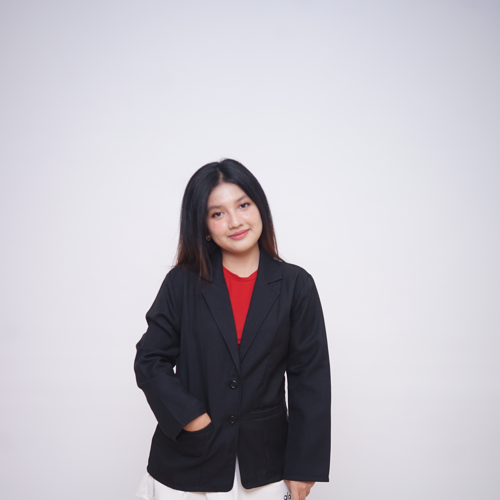
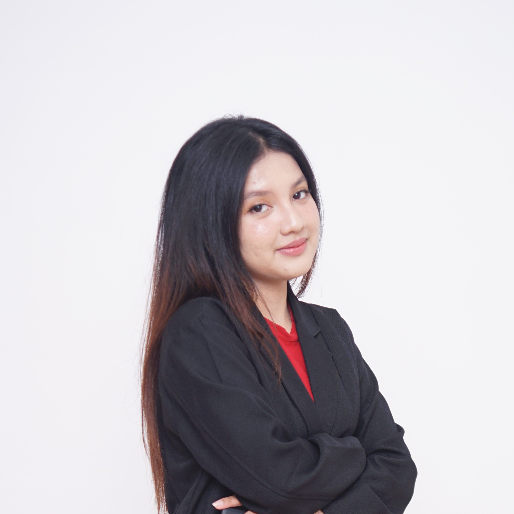
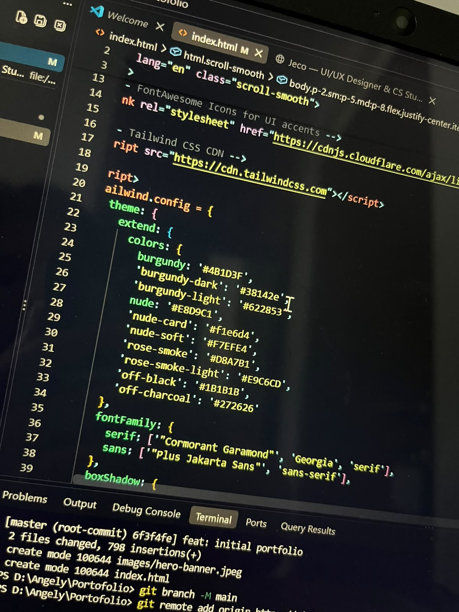
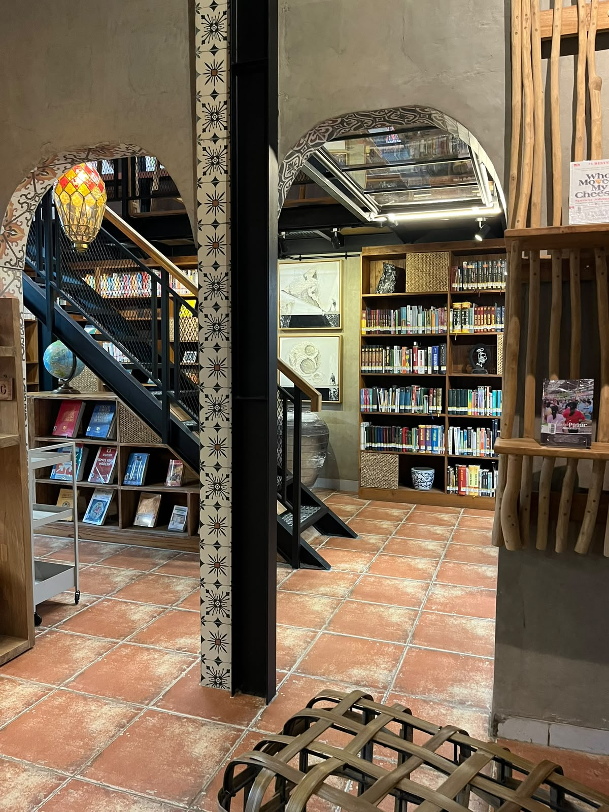
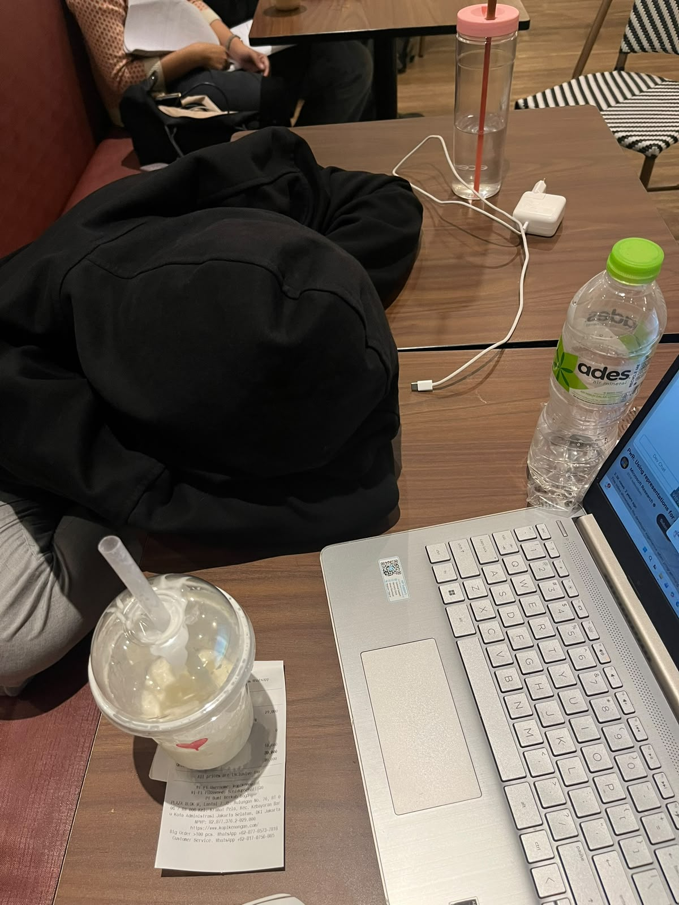
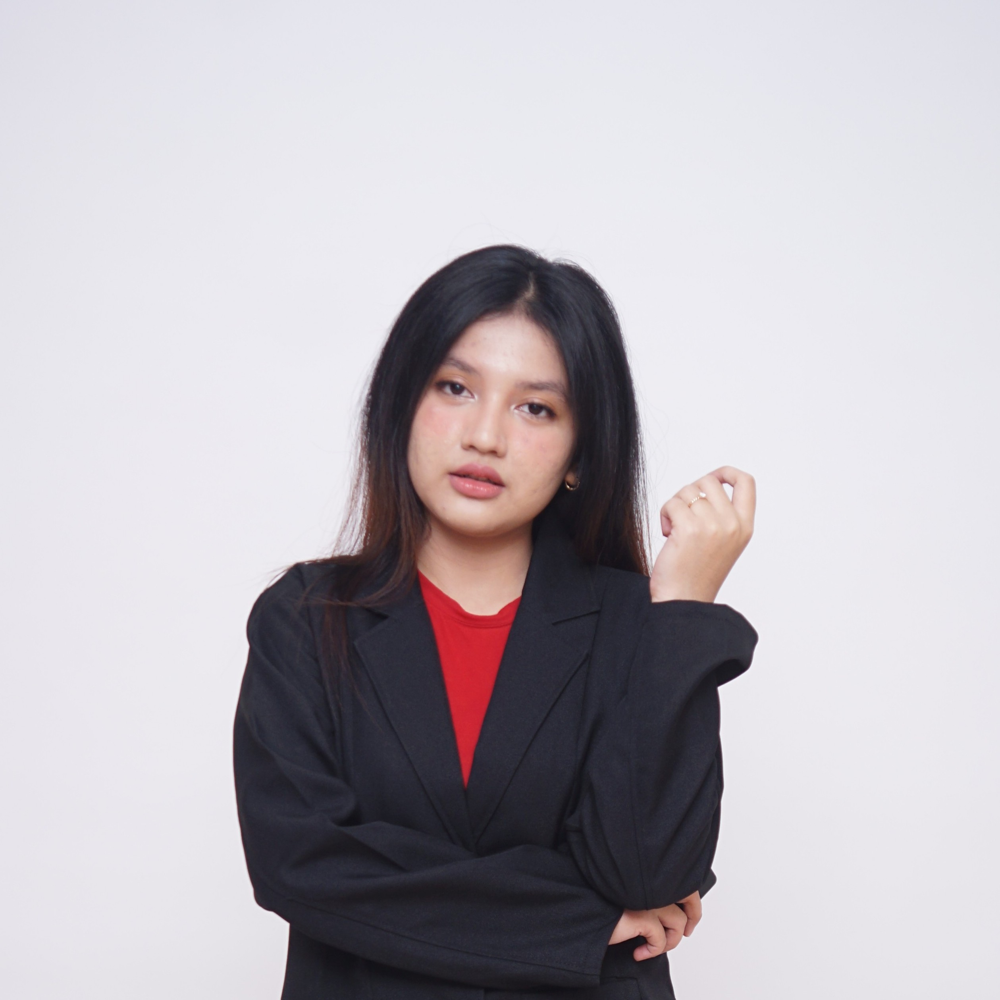

Hi, I'm Angel


Angely Oktaviani
Building intuitive digital spaces
Snapshots of Life & Craft



Angely Oktaviani
Merging deep technical logic with high-editorial aesthetic sensibilities. As an undergraduate student in Computer Science and an avid UI/UX designer, I believe software shouldn't just be functional—it should evoke atmosphere, clarity, and delight. From architecting real-time systems to sculpting high-fashion typography and user experiences, I bridge engineering precision with emotional digital storytelling.

"Design is intelligence made visible."
angely.oktaviani
Curious mind & clean interfaces.
Transforming abstract concepts into tangible digital interactions.
12+
Projects
25+
UI Screens
100%
Passionate
My Values
The Pillars Behind Every Prototype
Authenticity
Digital products must have soul and character. Rather than carbon-copying generic UI kits, I strive to design interfaces with distinctive personality, tailored tone, and emotional resonance.
Intuitive Flow
True freedom for the user means zero cognitive friction. Every click, transition, and micro-interaction is calculated to feel natural, effortless, and instantly comprehended.
Impact & Code
Design doesn't end in Figma. With my CS background, I bridge design with real code: clean component lifecycles, scalable API integrations, and robust database architectures.
Growth Mindset
Iteration over stagnation. Constantly testing usability, reading research papers, and exploring cutting-edge web design trends to sharpen both creative and analytical capabilities.
Featured Works
 WebSockets • Node.js
WebSockets • Node.js
SmartQueue — Clinic Live Ticket System
Program Kreativitas Mahasiswa (PKM-KC). Sistem antrean realtime dengan WebSocket yang mereduksi waktu tunggu pasien hingga 42% melalui notifikasi estimasi cerdas.
 Branding • UI Design
Branding • UI Design
Mafella Pasta — Visual & Digital Identity
Merancang visual identity, layout menu modular, dan website pemesanan self-service yang meningkatkan konversi pesanan takeaway pada UMKM kuliner lokal.
 UX Research • Accessibility
UX Research • Accessibility
AuraBank — Senior-Centric Mobile Experience
Riset dan perancangan UI/UX ramah lansia dengan high-contrast mode, simplifikasi alur transfer 3-langkah, dan verifikasi biometrik audio interaktif.
 Laravel • MySQL
Laravel • MySQL
FitPulse — Member Booking & Trainer Portal
Platform reservasi kelas dan pelacakan program latihan personal trainer dengan dashboard analytics kehadiran dan pembayaran digital otomatis.
Design & Tech Arsenal
Kumpulan alat dan teknologi yang saya gunakan sehari-hari untuk mendesain prototipe hingga merealisasikannya dalam bentuk kode nyata.